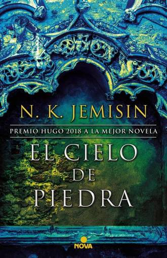

Eventos en marzo
-
Firma de libros: GEORGE R.R. MARTIN
Próximamente contaremos con la participación del autor de Canción de hielo y fuego durante nuestras jornadas de la lectura para jóvenes y adultos.
- Fecha: 25 de marzo
- Lugar: Reyes Católicos
- Hora: de 17:30 a 19:30
-

Publicación de la primera edición de El cielo de piedra de N.K.Jemisin
Por fin llega el esperado libro de fantasía, la continuación de la aclamada trilogía La tierra fragmentada inspirada en la serie televisiva de la TNT.
- Fecha: disponible a partir del 4 de abril
- Lugar: en todas las tiendas El lector de libros
-
Concurso de relatos
Llega la V edición del concurso de relatos para jóvenes de entre 12 y 18 años. Esta actividad ayuda en el desarrollo de la creatividad. ¡El premio son 200€!
- Fecha: del 1 al 15 de abril
- Lugar: entrega tu relato en Reyes Católicos
- Hora: recibiremos relatos solo de 9:00 a 13:30